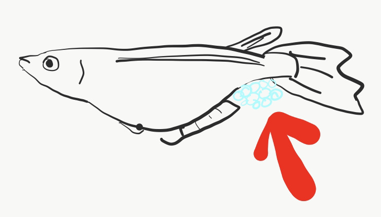

みすずのめだか
by misuzz
このブログについて
このブログについて
この「みすずのめだか」は、めだかの記録をつけつつ、webサイト作成の練習の場にしています。
そのため、ちょろちょろ内容が変更になり形が崩れたりすることがあると思いますが、ご理解の程よろしくお願いいたします。
筆者について
東京で地方公務員をしていました。現在はエンジニアの資格や言語を勉強しつつ、翻訳・通訳の仕事をしています。
めだかの卵のとり方
メダカの卵を産む時期
４月〜１０月です。
その期間に卵をとりましょう！
めだかの卵のとり方
まず、朝一で水槽覗いてください。
オス・メス入れていればメスのおしりの方に卵がわらわらついてます。

とびっこよりやや大きいくらいの大きさの透明な卵です。
見つけたら、そのめだかをすくってください。
で、違う容器に隔離してください。
私は以下のように、２リットルペットボトルを切った容器に入れています。

容器の中に緑色のものが入ってると思いますが、
以下の商品を入れています。
卵を緑色のやつにつけてもらおうという作戦です。
卵を緑の方につけたなーと思ったら、
めだかは水槽に戻し、たまごはたまごで別の容器に入れます。
なぜ隔離をするのか
隔離をしないと、めだかは卵を食べちゃうからです。
調べると、めだかは口に入るものを餌と間違えて食べちゃうそうです。
つまり、運良く卵の状態で食べられなかったとしても、
稚魚の時に食べられる可能性があります。
以上より、「隔離」が必要になります。
以上、卵のとり方でした。
孵化のさせ方は「卵の孵化のさせ方」を見てください。